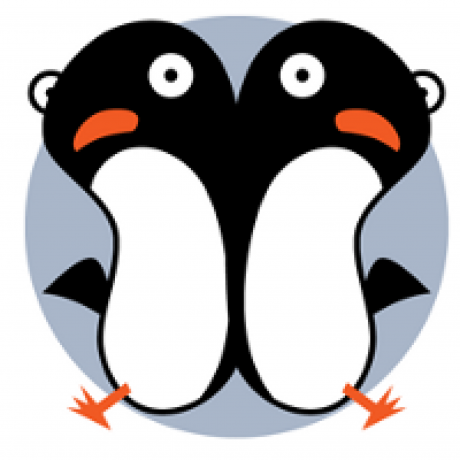
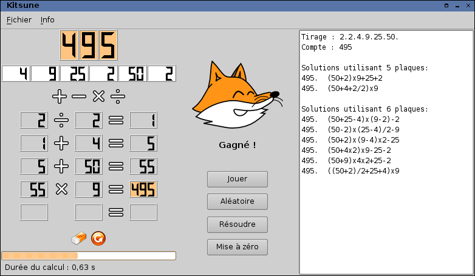

Software Libre para labores educativas

Oficina de Software Libre de la Universidad de Granada
(Twitter: @OSLUGR /
Facebook: @SoftwareLibreUGR)
Granada Geek
(http://www.meetup.com/es-ES/Granada-Geek/)

Aprendizaje general de nivel básico
Childsplay
Ejercicios con el objetivo de aprender matemáticas, las letras del abecedeario, deletreo y coordinación mano-ojo mientras juegan.
http://www.childsplay.mobi/

Childsplay
- Juegos: memoria visual, memoria auditiva, Pac-Man, Pong
- Ejercicios de matemáticas
- Puzzles
- Otros: Tres en raya, Arkanoid
GCompris
Un programa educativo con diferentes actividades mediante juegos.
http://gcompris.net/index-es.html

GCompris
- Descubriendo el equipo: jugar con periféricos del ordenador
- Actividades de descrubrimiento: colores, sonidos, memoria...
- Actividades de experiencias: varias actividades basadas en el movimiento físico
- Actividades recreativas: jugar al fútbol, pintar, escribir textos...
- Actividades matemáticas: cálculo, geometría y numeración
- Actividades de lectura: seleccionar letras, completar letras...
- Juegos de estrategia: ajedrez, Conecta 4...
Omnitux
Proyecto enfocado en proporcionar actividades educativas alrededor de elementos multimedia (imágenes, sonidos, textos).
http://omnitux.sourceforge.net/index.es.php

Omnitux
- Manipulación del ratón
- Aprendizaje
- Asociaciones
- Memorizar cartas
- Rompecabezas
- Diferencias
- Número
- Escritura
- Arte
- Geografía
Sebran's ABC
12 juegos sobre operaciones aritméticas, lectura y memorización.
Aprendizaje de lengua castellana
Katamotz Lectura 2.0
Ayuda para mejorar el proceso de lectura aumentando la ligereza de la misma mediante el uso de textos que van aparenciendo y desapareciendo a una velocidad controlada.
Además, tenemos la posibilidad de resaltar letras o palabras.
http://katamotzlectura.blogspot.com.es/p/katamotz-lectura.html
Katamotz Lectura 2.0
Kataluga 2.0
Para alumnos con dislexia y otros problemas para adquirir competencias lingüísticas.
http://katamotzlectura.blogspot.com.es/p/kataluga.html
Kataluga 2.0
MITO
Desarrollado por la Universidad de Málaga para enseñar ortografía con 4 tipos de juegos, cada uno con sus reglas que los alumnos deben comprender y aplicar en el juego.
http://www.lcc.uma.es/~cristina/mito/
MITO

KHangMan
El mítico juego del ahorcado para aprender vocabulario.
https://edu.kde.org/khangman/
KHangMan

KVerbos
Para practicar la conjugacion de verbos en español. Posee una amplia biblioteca de verbos en español (aproximadamente 9000 verbos). También permite seleccionar frases.
https://edu.kde.org/kverbos/
KVerbos
Learning with Texts
La idea es copiar un texto de la web y pegarlo en el programa. Cuando “estudiemos” el texto, sólo hará falta hacer clic sobre las palabras que no conocemos para agregar su definición.
http://lwt.sourceforge.net/
Learning with Texts
Aprendizaje de matemáticas
CubeTest
Sirve para que los alumnos practiquen la visión espacial, contestando a diez preguntas tipo test en las que se muestra un cubo y cuatro posibles vistas distintas del mismo, de las que sólo una es correcta.
https://www.vandenoever.info/software/cubetest/
CubeTest

Tux of Math Command
Un juego con el que ejercitar las cuatro operaciones matemáticas básicas, es decir, suma, resta, multiplicación y división. Los ejercicios se precipitan pantalla abajo y el jugador tiene que acabar con ellos antes de que lleguen al
suelo poniendo el resultado.
http://tux4kids.alioth.debian.org/tuxmath/index.php
Tux of Math Command
TuxMathScrabble
Otro juego pero en este caso de Scrabble matemático, con números en vez de letras, y las mismas cuatro operaciones fundamentales.
http://www.asymptopia.org/TuxMathScrabble-2015/
TuxMathScrabble

Kitsune
Resolver problemas de aritmética hallando un número concreto a partir de otros y, de nuevo, utilizando sólo las operaciones aritméticas elementales.
http://kitsune.tuxfamily.org/wiki/doku.php?id=homepage
Kitsune
WxGéométrie
Calculadora gráfica para estudiantes de ESO y bachillerato, que dispone de cuatro módulos diferenciados: geometría dinámica, estadística, trazador de curvas y cálculo científico.
WxGéométrie

GeoGebra
Un procesador geométrico y algebraico, o sea, software interactivo que aglutina geometría, álgebra y cálculo.
https://www.geogebra.org/?lang=es
GeoGebra
GNU Octave
Es una alternativa libre a la herramienta de software matemático Matlab. Realiza toda clase de cálculos numéricos con una sintaxis compatible con Matlab, permitiendo elaborar gráficos usando GNUPlot. QtOctave es su interfase gráfica
recomendada.
https://www.gnu.org/software/octave/
GNU Octave
Maxima
Es un programa de cálculo simbólico que desciende del proverbial DOE Macsyma. Se suele utilizar en combinación con wxMaxima a modo de interfaz.
http://maxima.sourceforge.net/es/
Maxima
Axiom
Es un magnífico sistema para álgebra computacional, con una jerarquía de tipos matemáticamente correcta, una documentación completísima y la filosofía de Literate Programming.
http://www.axiom-developer.org/
Axiom
Pari/Gp
Es otro sistema para álgebra computacional, pero pensado para la teoría de números.
http://pari.math.u-bordeaux.fr/
Pari/Gp

Metamath
Para la demostración formal de teoremas, verificables por computadora.
http://us.metamath.org/
Metamath
Kalgebra
Graficador de funciones en dos y tres dimensiones, calculador de expresiones matemáticas.
https://edu.kde.org/kalgebra/
Kalgebra
Aprendizaje ciencias naturales y geografía
ForcePAD
Programa para visualizar el comportamiento de estructuras sometidas a cargas y condiciones del contorno.
http://forcepad.sourceforge.net/
JMCAD
para modelar y simular sistemas dinámicos complejos, ya sean lineales, no lineales, temporales continuos, discretos o variables e híbridos (necesita Java).
http://jmcad.sourceforge.net/index_us.shtml
PhET
también con simulaciones, pero animadas e interactivas.
https://phet.colorado.edu/es/
Jmol
Visualizador de estructuras químicas en tres dimensiones (no requiere instalación pero sí Java).
http://jmol.sourceforge.net/
BKChem
Dibuja sustancias químicas y permite exportarlas en diferentes formatos (precisa .NET Framework).
http://bkchem.zirael.org/
OpenBabel
Convertidor de formatos con elementos químicos.
http://openbabel.org/wiki/Main_Page
Avogadro
Un editor de moléculas avanzado para química informática, modelado de moléculas, bioinformática, ciencia de materiales y ámbitos similares.
http://avogadro.cc/wiki/Main_Page
Kalzium
Tabla periódica de elementos. Actividades: Identificación de los elementos de la tabla periódica, ecuaciones químicas.
https://edu.kde.org/kalzium/
Atomix
Juego de rompecabezas de moléculas. Actividades: Juego de construcción de moléculas a partir de sus átomos.
http://manpages.ubuntu.com/manpages/wily/man6/atomix.6.html
Celestia
Un simulador estelar con el que podemos viajar por el cosmos y contemplar planetas, satélites, estrellas y demás cuerpos astronómicos, o ver las constelaciones y experimentar el modo en que el Universo gira alrededor.
http://celestia.es/
Stellarium
Compone visiones fotorealistas en movimiento del cielo nocturno, en las que es posible hacer zoom sobre el Sistema Solar y que cuenta con más de 120.000 estrellas del catálogo Hipparcos, 88 constelaciones y 70 nebulosas.
http://www.stellarium.org/es/
Virtual Moon
Un atlas lunar con el que observar la superficie lunar al completo, ampliar accidentes geográficos y consultar todos los detalles acerca de ellos.
https://sourceforge.net/projects/virtualmoon/
Marble
Un atlas y globo terráqueo virtual con distintos mapas temáticos y proyecciones.
https://marble.kde.org/
World Wind
Desarrollado por la mismísima NASA, con el que se puede explorar la superficie terrestre y lunar con imágenes de satélites y mapas topográficos, ampliable (requiere .NET Framework).
https://worldwind.arc.nasa.gov/
World Geography Puzzle Games
Programa en inglés sobre los continentes y océanos del mundo con lecturas y juegos en cuatro niveles.
http://world-geography-games.com/
Aprender idiomas
Anki
Aplicación que permite crear tarjetas para aprender palabras extranjera. Las tarjetas pueden ser combinados en una cubierta sobre los temas y personalizar las propiedades de barajas de cartas y plantillas.
StarDict
Diccionario que permite la búsqueda de palabras específicas, similares o de un texto completo. Además de hacer uso de diccionarios en línea, así como la traducción de texto completo.
Ingles Trainer
Aplicación diseñada para entrenar la comprensión lectora de la lengua inglesa. Tiene dos formas de funcionamiento: completas (con comentarios de audio) y super (sin audio).
FVords
Para aprender inglés y alemán siguiendo distintos formas de aprendizaje, teniendo en cuenta la psicología de la memoria haciendo uso cursos secuenciales.
Adquisión de habilidades y trabajos multimedia
GNU Denemo
GNU Solfege
Práctica de intervalos armónicos y melódicos, práctica de escalas, ritmos y acordes.
Ktouch
Velocidad y precisión en la escritura con el teclado.
TuxTyping
Juego educativo de mecanografía protagonizado por Tux.
VYM
Creación de diagramas o mapas mentales para la organización de ideas y realización de trabajo estructurado.
Kompozer
gestor de páginas web muy sencillo
Bluefish Editor
Creador de páginas web.
CaRMetal
Este programa permite dibujar figuras geométricas desde líneas,curvas y polígonos. Además permite medir ángulos y distancias entre los segmentos de rectas, al igual que algunas transformaciones geométricas.
Otros conocimientos generales
Gns3
Programa para simular redes. Actividades: Simulación de redes de computadoras.
Klogic
Simule circuitos digitales
LibreCAD
Otra de las más populares alternativas libres y gratuitas a AutoCAD. Eso sí, en esta ocasión, LibreCAD solo ofrece diseño en 2D. Creada utilizando el código fuente otra herramienta de diseño libre llamada QCad Community Edition (también parte de esta lista), sus principales ventajas son el ser bastante ligera, contar con una interfaz parecida a la de AutoCAD, y nuevamente, el ser multiplataforma.
FreeCAD
FreeCAD ofrece una experiencia e interfaz increíblemente similar a la de AutoCAD. Se enfoca ingeniería mecánica e industrial. Ofrece gran variedad de herramientas para asistir en el diseño de elementos mecánicos. También es multiplataforma.
Aeskulap
Es un visor de imágenes médicas en formato DICOM (Digital Imaging and Communication in Medicine) es el estándar reconocido mundialmente para el intercambio de imágenes médicas, pensado para el manejo, almacenamiento, impresión y transmisión de imágenes médicas. Es una alternativa de código libre a los visores DICOM comerciales.
Debian Med
Es una distribución personalizada de Debian creada para proporcionar un sistema operativo que gestione varios paquetes disponibles de software libre que están bien adaptados para las necesidades de las prácticas médicas y la investigación.
Debian Med proporciona los siguientes tipos de herramientas informáticas: gestión de historia clínica de pacientes, sistemas de información hospitalaria, biología molecular y genética médica, proyección de imágenes médicas, práctica dental, medicina veterinaria, farmacia, fisioterapia.
Lincity NG
Planee y construya una ciudad.
OpenCity
Juego de simulación de una ciudad en tres dimensiones. Actividades: Construcción de una ciudad incluyendo zonas de viviendas, industrias, facilidades eléctricas y de infraestructura.
Scratch
Es un entorno de programación que permite crear historias interactivas, juegos, música y obras de arte; todo ello mediante la aplicación de lógica de programación.